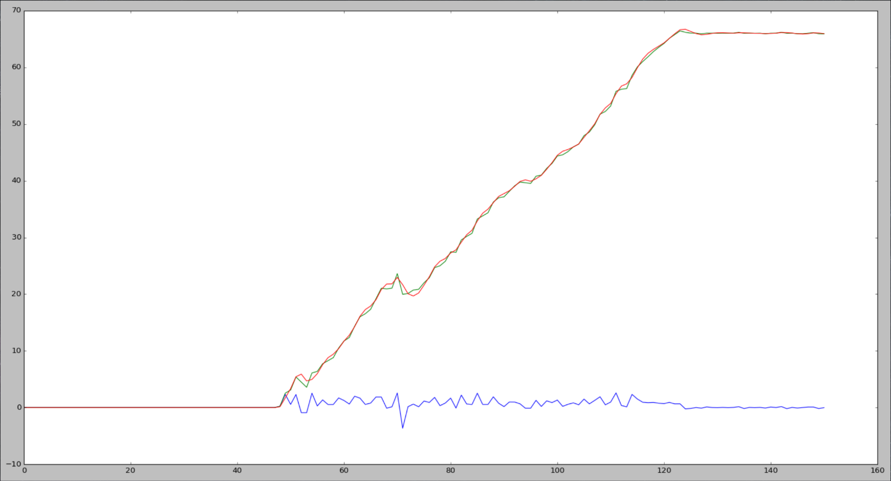

When I was looking at colleges, one of the things that really attracted me to Southern Methodist University was hearing about "the robot class". The class is KNW 2300, known most of the time as First Year Design. In this class, you're randomly assigned a team with a few other people, and tasked with building a robot that can accomplish several tasks. Along the way you get some guidance from professors and teaching assistants, but mostly it's up to the students to figure it out. This year, our robot had to navigate a small maze, take wind speed and temperature readings, avoid unpredictable obstacles, and collect and deposit a ping pong ball - all completely autonomously. I will not document our entire design and build process, but I will talk about the code we ran on it, because I think I came up with a lot of interesting solutions for problems we encountered.
The Big Challenges
The major difficulty with programming was navigation. The robot moved around in a small enclosed area with walls placed so as to guide the robot along a certain path. The idea was that each robot would take roughly the same path through the field, performing each task one by one as they went. There would also be another robot running on the field at the same time, and points would be deducted if your robot ran into the other one, so it had to be able to avoid obstacles dynamically. ALSO, a small cinder block would be placed somewhere in the middle of the field, just to screw with everyone, and points would be awarded for successfully getting around it.
The playing field schematic, and the suggested path through it
At this point you may be thinking, "These are problems that actual roboticists have been working on for years, and there still is not a really good solution for making robots work together autonomously. How are a bunch of first year college students with practically no guidance supposed to do all this?" Well, I was thinking the same thing. Spoiler alert: only one team of the thirteen that participated this past semester successfully navigated the entire course and performed every task, and they were only able to do it once. (Spoiler alert: it wasn't my team).
We had at our disposal regular tools, 3D printers, a laser cutter, and a whole bunch of metal frame pieces and screws and stuff. The robot had to be controlled with an Arduino, and we were provided with motor controllers and other electronics for interfacing with it. We also had a budget of $30 which we could spend on other parts, as long as we got the purchase approved by the professors.
I was most interested in how we were supposed to go about programming the robots. The professors didn't want us to have to mess around with Arduino sketches because lots of the CS majors taking the course were still new to programming. Instead they gave us a Java library to use, since the intro programming class taught here at SMU is in Java. The Java library contained a bunch of high-level functions for doing things like taking readings from certain sensors and controlling the motors, and it was supposed to make the actual operation of the robot relatively easy. It worked by running the Java code on a laptop, which was connected to the robot via a USB cable, and there was a sketch running on the Arduino that would receive serial commands from the laptop to control the robot. You read that right: while the robot was autonomously running on the field, it had to be connected to a laptop with a USB cable.
Essentially we were expected to write code that would control the robot by banging around the field, trying to roughly figure out where we were based on bump sensors and ultrasonic proximity sensors, all while a ten foot long USB trailed behind. I was not pleased. I was not pleased. I wanted a navigation solution that was elegant and effective, that would allow us to reckon our position independently of the field elements, and which was (preferably) wireless. So I took that $30 budget and ran with it.
My Ideas
The night after we were issued the rules of the competition, I went into the atrium of the Caruth engineering building (where the competition would be held), lay down on the floor, and stared up at the ceiling. I was looking for features of the room that would remain constant, and could be used as reference for a navigation system. Last year I created a computer vision system for the FIRST robotics team I was on, and I was thinking that I could do something similar for this challenge. This is what I came up with:
The ceiling of the room where the competition was
I would put a webcam on the robot and point it at the ceiling. The camera would see the lights on the ceiling, which would never move, and as the robot drove around it could use the lights to measure its position. The USB camera would be plugged into a Raspberry Pi board, which would act as a co-processor to the Arduino. All the vision calculations would be performed on the Pi, and the data it gathered would be used to control the robot. Also running on the Pi would be the Java toolkit that controlled the robot - the Pi would be plugged into the Arduino instead of a laptop. The Pi could then be connected to a WiFi network with a USB dongle, and controlled via SSH. It was a complicated system that need to go through a little bit of refining, but if it worked, our robot would not only be wireless, but also able to reckon its field position absolutely and navigate without relying totally on limited sensor data.
The Implementation
The camera looks at the ceiling. The exposure is turned pretty much all the way down, so really all the camera can see is black with bright points where the lights are. A threshold is applied, so only pixels within the right range of colors are selected. An algorithm is applied that finds all contiguous regions, and of the blobs identified, the ones within the right size range (and which are also roughly circular) are placed in a list.
Now the math: What we have is a list of coordinate points, each representing the center of one of the blobs on the screen. We need to turn those pixel values into actual measurements. The first thing that is done is to turn this perspective projection into an orthogonal projection where the coordinates actually represents distances in inches from where the line of sight of the camera intersects the ceiling. Here's how that's done: any given camera has a limited field of view which can be measured in degrees both horizontally and vertically. The field of view is also measured in pixels - the resolution of the camera. That means that each pixel represents a little slice of the field of view, and corresponds to an angle. By dividing the field of view in degrees by the resolution in pixels (separately for both axes), we can get a 'degrees-per-pixel' value for both axes of the camera being used. Then if we know that a blob is a certain number of pixels away from the X axis at the center of the screen, we can multiply that Y coordinate by the vertical degrees-per-pixel value to get the angle formed between the vertical line of sight of the camera and the line of sight directly from the camera to that point. Take the tangent of that angle and multiply it by the distance in inches from the camera aperture to the ceiling, and we have the Y coordinate inches of that point relative to the position of the camera. Doing that for every point on the screen, for both the X and Y axes, gives an accurate layout of the positions of the lights the robot can see.
I talk about this method of distance reckoning with a camera in my other article about using camera vision to control a robot. If you want a little more information on the topic, you can check that out here.
Next, the actual position of the robot can be found by looking at the differences between consecutive frames. If the robot moves in a straight line, the points on the ceiling will move relative to the robot in the opposite direction across many frames of video. If the robot rotates (a perfectly zero-point rotation), the points on the ceiling will rotate about the center of the image in the opposite direction. I decided that for every movement the robot makes, the change to the coordinates of the lights it sees can be modeled by a rotation of the coordinates (x0, y0) by some θ0 around the center of the image, then a translation by some (Δx, Δy), then another rotation by some θ1 around the center again, to give the coordinates (x1, y1). If you think about it, this makes sense - the robot will not always travel in a straight path, but no matter what path it takes to get from one point to another, you could get the same result by rotating the robot to face the target point, moving in a straight line to that point, then rotating again to face some final direction.
This transformation can be represented by the matrix:
Transformation matrix
Multiplying a position vector [x0, y0, 1] by this matrix will perform the transformation described above and give a vector [x1, y1]. So we have this system of equations described by a matrix - how do we solve for the variables Δx, Δy, θ0, and θ1? And how do we generalize it for multiple points (since only one point certainly isn't enough to solve for 4 variables)? We can rearrange this data to create a new matrix parametrized by our given points, and then factor out a vector of unknowns to solve for.
Consider that the product of the matrix
Transformation matrix
and the vector [x0, y0, 1] is the same as the product of the matrix
Re-parametrized matrix
and the vector [ cos(θ0+θ1), sin(θ0+θ1), Δx*cos(θ1)-Δy*sin(θ1), Δx*sin(θ1)+Δy*cos(θ1) ] which I will call ϑ (that character is also a theta - I'm running out of Unicode Greek letters). Both are equal to the vector [x1, y1]. The difference is that in the second parametrization, the matrix can be constructed of known values (the coordinates seen by the camera before and after movement), while the vector ϑ factored out is composed of operations on unknown values. Now imagine that we have multiple sets of coordinates. Constructing the above matrix for each set, and appending them all, gives the design matrix ᙭ (chi):
Design matrix
This matrix has two rows for every point found in the image. Multiplying this new matrix by ϑ gives a vector Y:
Transformed vector
of each point after the transformation. These values are known, and the values used to construct ᙭ are known, so all that remains is to solve for the vector ϑ.
Now for a key simplification, which makes the solution somewhat apparent, but introduces some error. As you'll see, this method did not work quite the way it was supposed to, and this may be the reason why.
The robot doesn't have very much time at all to move between ticks - maybe a couple tenths of a second. We can therefore assume that while the total angle the robot rotates between ticks is enough that it needs to be accounted for, the individual values of θ0 and θ1 are small enough that we can approximate them as 0. By assuming θ1 is equal to 0, the vector ϑ simplifies to [ cos(θ0+θ1), sin(θ0+θ1), Δx, Δy ]. Given this, we don't have to try to solve for θ0 and θ1 individually anymore. We can solve for this vector ϑ, and get that arccos(ϑ(0)) and arcsin(ϑ(1)) are the total angle the robot has rotated, and ϑ(2) and ϑ(3) represent Δx and Δy respectively. Now that each entry of theta only contains one unknown variable, theta can be found with the formula:
Solution to the system
where ᙭, Y, and ϑ are as defined above, and the negative first power indicates the inverse of a matrix. This formula is derived using pretty crazy math, which I won't get into here, but if you're interested in this and other regression techniques, this is where I learned about this topic from.
That was a lot of math. Did it work?
Well, there were a few problems. The first one we ran into was that the camera's field of view was too small, and there were lots of 'blind spots' on the field where it couldn't see the minimum number of lights to get a good reference. We resolved that problem by tipping the camera by 21 degrees from the vertical, which we had to account for in the math. That didn't completely fix the problem since there were still things like burned out lights and interference from the skylight causing issues, but it certainly worked a lot better. One of the most noticeable effects of this interference was 'jumps' in the data where it would suddenly think it had moved a lot farther than it had, then go back to normal. I remedied this with a Kalman filter. A Kalman filter is a set of mathematical equations, the solution to the question "How do you account for random error conforming to a Gaussian distribution when processing the data from multiple sensors?" They use the previous readings to predict what the next reading should be, and the next reading is depressed if it is too much larger than expected. This has the result of smoothing out the position curve and reducing compounding error.

Blue line is raw data, green line is the raw data just added together, red line is after Kalman filter is applied
Our most major problem was turning. This was problematic for a number of reasons. The floor was always dusty, and our wheels didn't have amazing traction, so it wasn't uncommon for the robot to begin turning and simply get stuck. In addition, turning altered the view of the camera quite a bit more than linear motion did, so it could easily turn past where it could see the lights if it was near the edge of the playing field. But in general using the lights to turn was simply unreliable; at the time we were experiencing these issues we were frantic and sleep deprived, since our deadline was fast approaching, and solving the problem might have just been beyond me. I suspect that I failed to account for the fact that since we tilted the camera, the rotations of the image were no longer occurring around the center point.
Okay, yeah, but did it work?
It worked. In fact, it worked really well. When we just wanted to go in a straight line, we could give it a distance to drive, and it would be accurate to within 2 or 3 inches every time. This was, of course, super exciting, and we leveraged this advantage as much as we could during the competition. When we actually ran the robot on the course, all our distances were correct, but most of the time our turns were so far off from where they were supposed to be we didn't get very far. But overall, it functioned very well, we got to the second round of the competition, and we got to feel clever for making it all work. This system was fairly complicated, and computer vision, machine learning, Linux, multiple programming languages, and a lot of teamwork went into making it possible. I worked very hard on this over the course of the entire semester, and for these reasons I kind of see this project as the culmination of my entire educational career up to this point.
If you want more information about our robot and what it did, you can take a look at our final presentation, or send me an email.